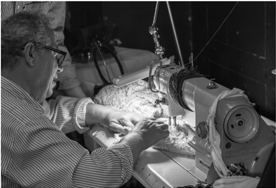
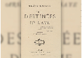
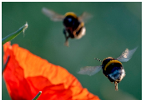
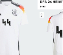
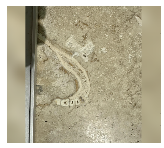

BITS
12:13Oppenheimer è stato proiettato
per la prima volta nei cinema
giapponesi,mesi dopo l'uscita nel resto
del mondo
09:42È stato trovato alla stazione di milano
Edoardo Galli,il 16enne scomparso una
settimana fa da Colico, in provincia di Lecco
15:15L'ONU ha detto che dall'inizio dell'anno più di 1500 persone
sono state uccise ad Haiti dalle bande criminali
08:21Più di 30 persone sono state uccise in un bombardamento
in Siria, forse compiuto da Israele
07:48Per il Tar del Lazio l'ordinanza con cui Matteo Salvini aveva
precettato lo sciopero dei trasporti del 15 dicembre è illegittima
Alle elezioni in Turchia tutti guardano a Instanbul,ancora
Domenica si rinnovano le amministrazioni di oltre 4.000 città, tra cui la capitale Ankara, ma Istanbul è quella che importa di più al presidente Erdogan e all'opposizioneRomania e Bulgaria sono entrate nell'area Schengen,in parte
Da domenica non ci saranno più controlli per la circolazione delle persone nei porti e negli aeroporti dei due paesi, ma non via terra, per il veto dell'AustriaNessuno vuole incontrare Kim Jong Un, tranne il primo ministro giapponese
Il dittatore nordcoreano non incontra un leader occidentale da anni, ma il giapponese Fumio Kishida sta provando a organizzare un incontro, per ragioni di politica interna e per una vecchia storia di rapimentiNella moda trovare chi sa cucire è diventata un'impresa
Ma anche chi sa creare prototipi o cartamodelli, per ragioni soprattutto culturali che hanno portato a una svalutazine dei mestieri tecnici

Ci sono delle novità sulla misteriosa "sindrome dell'Avana"
Una nuova inchiesta fatta da giornalisti molto stimati riprende l'ipotesi che la sindrome sia stata provocata da un'arma segreta russa, ma non ha trovato la provaIn evidenza
Che ne sarà della terza stagione di "Euphoria"?
Cosa ce ne facciamo di quelle case rosse ai lati delle strade

All'inizio i Ramones non convincevano nessuno
L'ordine in cui nascono sorelle e fratelli influenza il loro carattere?

La biblioteca di Harvard ha rimosso una rilegatura in pelle umana
Gli animali hanno una cultura?


Il primo cauto approccio della famiglia imperiale giapponese ad instagram
Le Ferrari azzurre per il Gran Premio di Miami, non poi così azzurre
Adidas ha vietato la vendita della maglia della Nazionale tedesca con il numero 44 perché ricorda la sigla delle SS
Il grande monumento del periodo sovietico smantellato a Kiev

Il video della squadra di calcio del Napoli contro il razzismo negli stadi
L'immagine di una mandibola di ominide scoperta per caso in un pavimento di travertino
